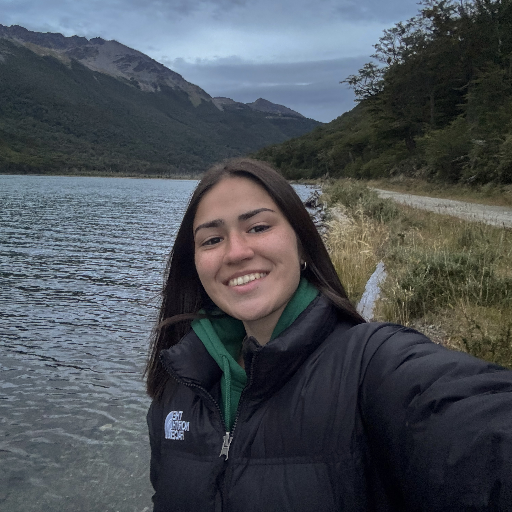

Chiara Barone
¬°Hola!üëãüèΩ Soy Chiara Barone, tengo 21 a√±os y nac√≠ en Ushuaia, esa ciudad m√°gica en el fin del mundo rodeada de monta√±as, bosques y paisajes que parecen salidos de un cuento. Actualmente vivo en Buenos Aires, pero siempre que puedo, vuelvo al sur... porque ah√≠ est√° una gran parte de mi coraz√≥n ‚ù§Ô∏è.
Soy una persona inquieta, aventurera y amante de la naturaleza üèûÔ∏è. Me encanta caminar, perderme (aunque sea un poco), descubrir lugares nuevos y compartir todo eso con quienes tambi√©n sienten esa chispa por la aventuraüî•. Este blog naci√≥ como una forma de contar mis experiencias recorriendo algunos de los senderos m√°s hermosos de Ushuaia, desde los m√°s conocidos como Laguna Esmeralda hasta rincones menos transitados como Bah√≠a Cucharita o la m√°gica Laguna B√©lgica.
Si estás buscando inspiración para tu próxima caminata, o simplemente querés ver qué se siente estar en medio de la naturaleza fueguina, este espacio es para vos⭐️. Bienvenidx a mi pequeño rincón del mundo, donde cada paso es una historia.